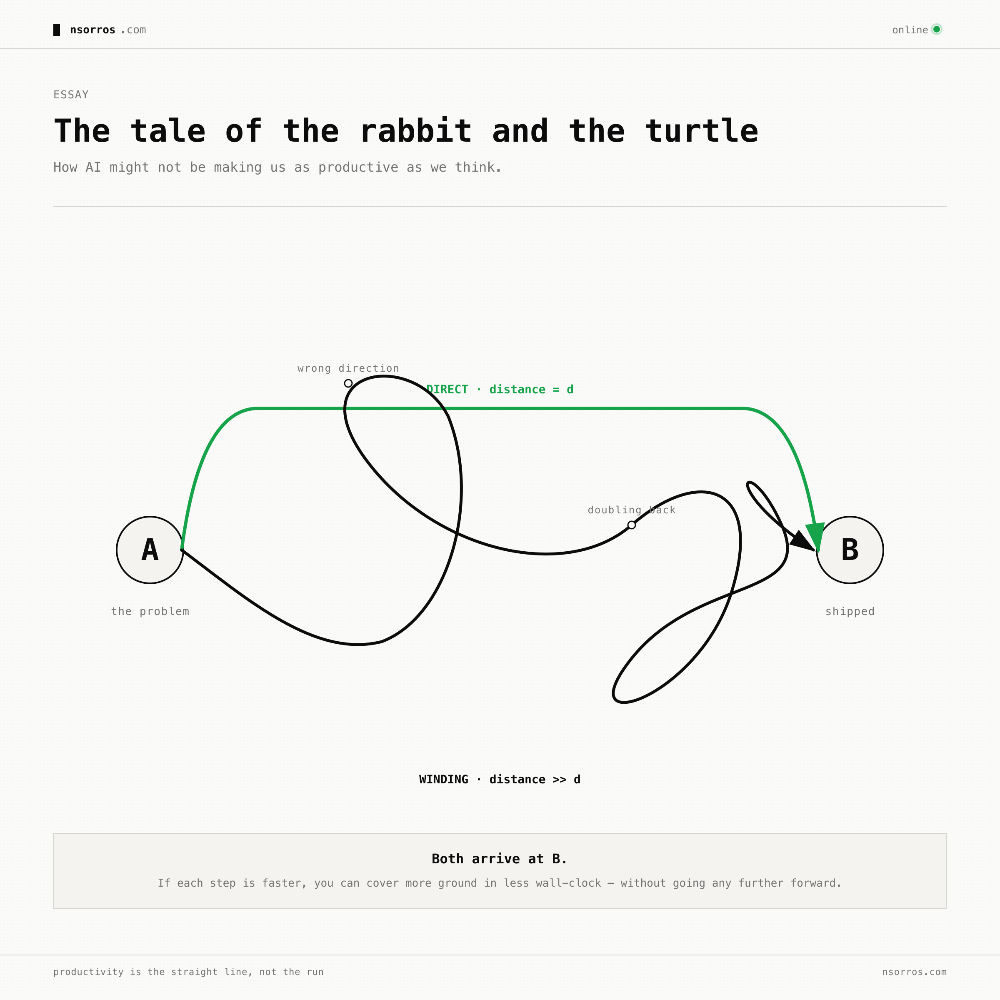
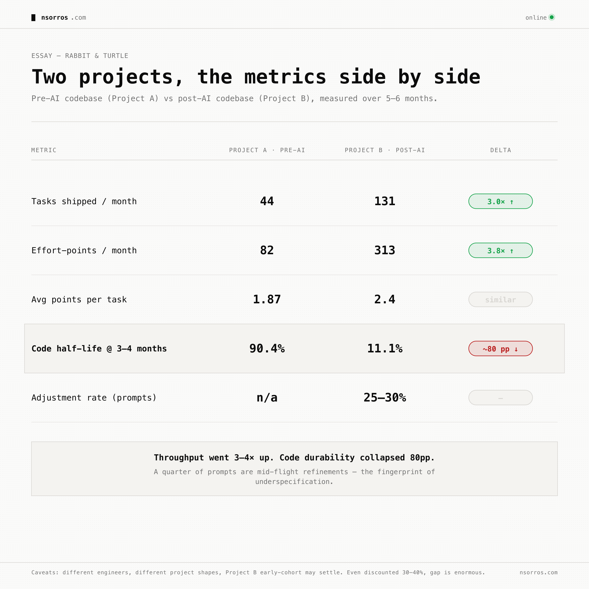

Rabbit and turtle
We feel more productive with AI. We're shipping thousands of lines a day. Whole apps and complex features are built in front of our eyes in a few hours — work that would have taken weeks pre-2024. The rabbit is fast.
But how much faster are we actually going from A to B? And what if we're moving faster down a longer road?

The mental model is the product
When you program, a big part of the work isn't typing code. It's fitting what already exists, and what needs to exist, into your head — and coming up with a solution that delivers the result in a way that is clean, extensible, and consistent with what the owner of the ticket actually wants. The output you're really producing is the mental model of the system. The code on the screen is a side effect of having that model in place.
Asking an AI agent to do the work, while underspecifying how or what needs to be done, breaks that. The mental model isn't getting built — the AI is filling in the gaps with its own assumptions about your intent. And that doesn't speed you up, because you'll eventually need to sync mental models with the system anyway. You'll still have to decipher what got built and confirm it matches what you wanted.
The difference is that now you do this iteratively. The AI produces something, you look at it, you realize you actually wanted X not Y, you tell it to adjust, it produces a new version, you refine again — until you converge. Every individual step feels fast. But are you faster, or are you just moving fast down a longer road?
Not a hypothetical
This isn't speculation. Researchers and engineers building with AI are converging on the same observation, and proposing different responses — spec-driven development, agent scaffolding, treating the LLM as a junior engineer who needs a tight brief. What matters in practice is being able to inspect whether you're in this situation and mitigate when you are. There's no clean, well-proven solution yet. So here are some thoughts and observations from my own coding journey with AI.
What we're trying to measure
The question is whether we are underspecifying and paying the price by rewriting too much of our code too often. Lines of code won't tell us — they're the most gameable metric of the AI era. Three signals get closer:
1. Code half-life. Of the code you wrote N weeks ago, what percentage is still alive in the codebase today? It captures durability. A high half-life means the code you ship sticks. A collapsing half-life means you're rewriting your own tracks. Compare a pre-AI codebase to a post-AI one and watch the trend shift.
2. Adjustment rate in your AI sessions. Read your prompts back and classify them. What fraction are refinements of prior AI output — "remove what you added," "different approach," "also do X" — versus brand-new scope or status checks? A pre-AI analog exists too: PR descriptions and commit messages with fix: / refactor: / revert: prefixes. If a meaningful share of post-AI work is mid-flight refinement and a much smaller share of pre-AI work was, you're spending real time syncing intent after the fact.
3. Story points (externally validated). How many units of real value are landing per unit time? If you have a PM, a customer, or any external system that quantifies what was actually delivered, that's the metric you want — and unlike the first two, it's hard to game. You can't fake a closed Linear ticket the way you can fake a green test.
The three together are useful because each is gameable alone but the triad isn't. Writing less code raises half-life but tanks tasks shipped. Accepting whatever the AI produces lowers adjustment rate but tanks half-life. Only "specify up front, ship deliberately" pulls all three in the right direction at once.
What it looked like on two of my projects
Project A is a pre-AI codebase from 2023–2024, hand-coded, no Claude in the loop. Project B is post-AI, built mostly by me + Claude Code over the last five months. (Both anonymised.)

Throughput is way up. No ambiguity — 3–4× more shipped per month, with similar effort per task. The rabbit is faster.
But the durability collapsed. Code that should be settled by month four has been rewritten down to 11% of itself. And about a quarter of my prompts to Claude are refinements after the fact — "remove the X you added," "different approach," "also handle Y." Not bug fixes — refinements. The unmistakable fingerprint of underspecification.
A few honest caveats. Project A was mostly built by a different engineer, so this isn't pure me-vs-me. The projects have different shapes (one a contained eval framework, the other a multi-app SaaS, which inherently churns more). And Project B is still young; the early-cohort half-life should improve as the code matures. But even discounting 30–40% for those confounds, the gap is enormous.
So how do you make the rabbit win?
There is no question that AI assistance gives you productivity gains. Tasks shipped per month went up 3× in my own data, with confirming evidence from external surveys. The rabbit is real, and it's fast.
The real question is how to make the most of those gains. What my data and others' suggest is that you should treat speed-of-generation as a tax base, not a finish line. The tax you pay is in churn and rewrites. The way to lower the tax is upstream — by spending more time building a mental model first, so that what the AI does isn't something that will require ten passes of refinement.
The turtle isn't slow because it types slowly. It's slow because it thinks before it moves. The rabbit can move much faster — but it only wins the race if it spends enough of its speed advantage on knowing where it's going.
Three signals to start with: code half-life, adjustment rate, externally-validated points shipped. Measure them, watch the trend, and see whether your road is getting straighter — or just longer.